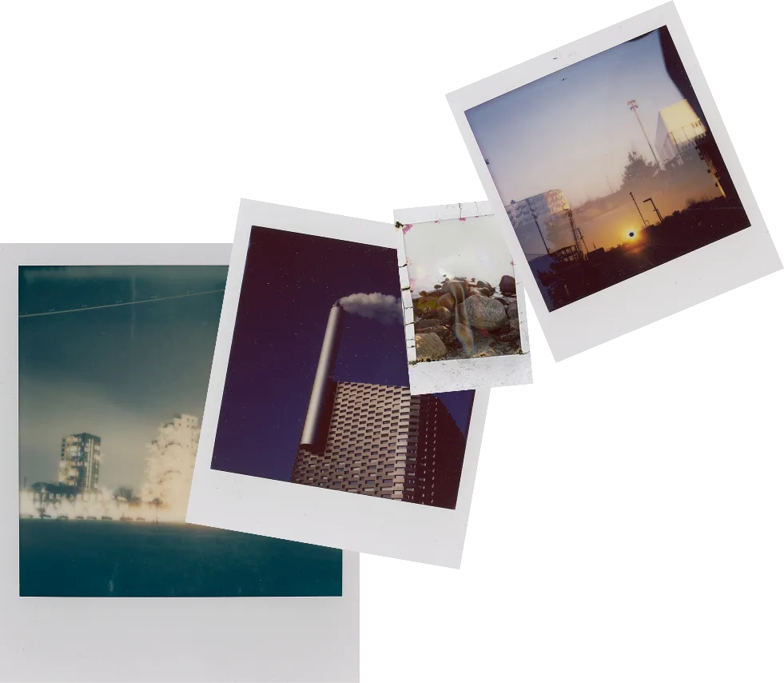
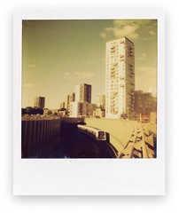
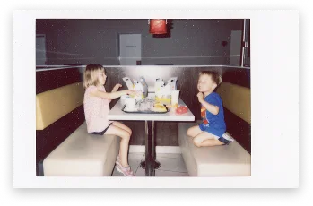
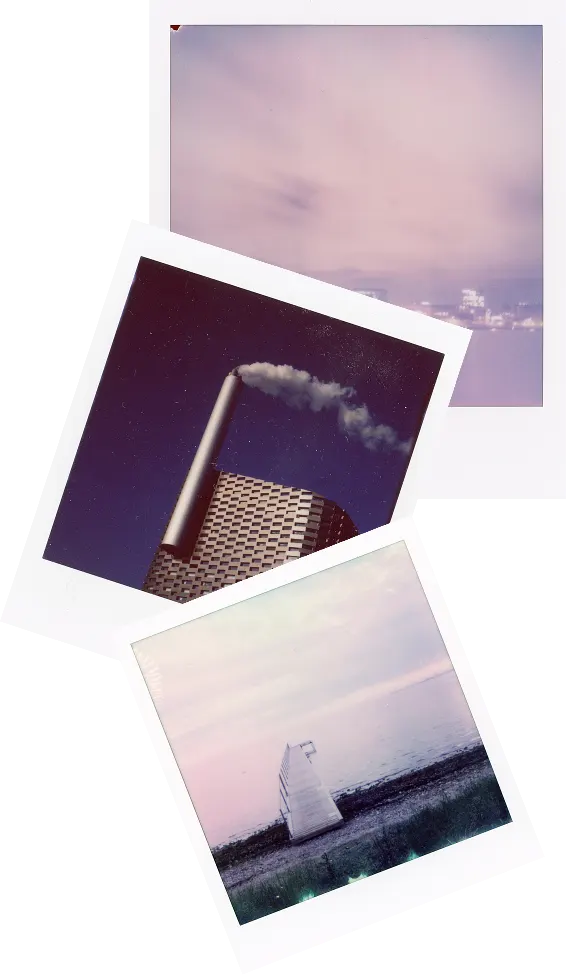

Nuværende største og mindste polaroid på markedet
Største: Instax Wide (99 x 62mm billede).
Mindste: Polaroid Go (46 x 47 mm billede).



Find dit Polaroid-, Instax- eller hvilket som helst andet instant-kamera, frem, og vis os dine instants. Instant Ugen er ikke en fotokonkurrence, det er mere en hyldest til god gammeldags analog instant-fotografering - alle, der deltager, er vindere! :-) Der vil dog være en flot præmie til én heldig instant-fotograf! Næste Instant Uge bliver afholdt d. 12-18 Oktober 2026.
Instant foto er et vidnesbyrd om livet. Det hele startede tilbage i 1940'erne. Edwin Land fotograferede livets begivenheder, og en dag på stranden med sin 3-årige datter, gjorde hun opmærksom på, at hun ville se billederne med det samme! Edwin satte sig selv en stor opgave: At opfinde en film, der kunne fremkalde sig selv. Hurtigt. Et halvt årti senere etablerede Edwin Land virksomheden Polaroid, som nu om dage nærmest er synonymt med Instant foto.
E. Land opfinder Instant photo
Der sælges over 10 mio instant kameraer
Polaroid går konkurs
Markedet vokser igen
Instant foto blev til en omfattende forretning i 70'erne og 80'erne, indtil den digitale æra næsten slog hele branchen ihjel. Nu er instant foto stærkt på vej tilbage: Den enorme mængde tid spildt bag skærme har ansporet en modreaktion: Analoge, offline oplevelser er blevet populære igen. Og instant foto er netop det: En analog, livsbekræftende og taktil fotooplevelse. Så lad os fejre livet og skabe minder :-)
Største: Instax Wide (99 x 62mm billede).
Mindste: Polaroid Go (46 x 47 mm billede).
Polaroid 20 x 24 fra 1976-1978:
510 x 610 mm billede
Tag et billede af dit instant foto med din smartphone (eller scan det for den bedste kvalitet) - filen skal være mellem 2-10 MB, i jpg/jpeg- eller webp-format.
Upload dit billede og dit navn + kontaktinfo på [link til din “del dine instants”-side]
Accepter vilkår og betingelser for konkurrencen [link til afsnittet “vilkår og betingelser” på siden “del dine instants”. Den korte version: Deltagere skal være over 18 år, portrætterede personer skal have givet samtykke, og du accepterer, at dit instant foto må udstilles og bruges til at promovere fotokonkurrencen.
